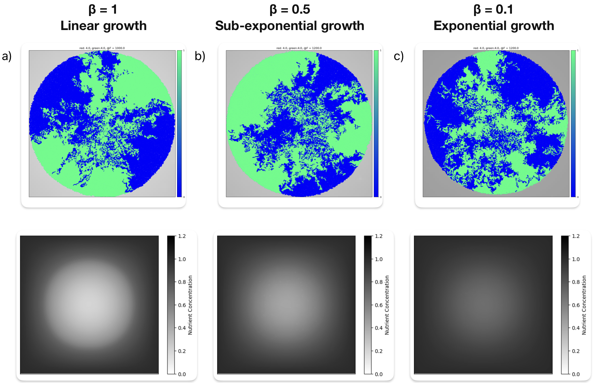
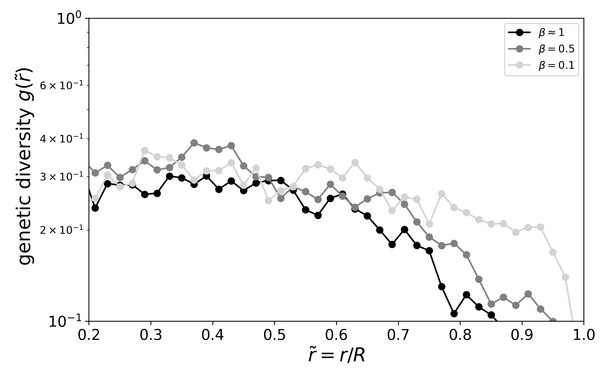

Summer Internship: AG Bechinger: Soft Condensed Matter Lab
Experimental realization of coupled active colloids
In the summer of 2023, I joined Prof. Dr. Clemens Bechinger’s lab, where I conducted experiments on
laser-activated Janus colloids. I placed the colloids on a lattice and induced oscillations in them
using optical tweezers to study their coupling via hydrodynamic interactions. We aimed to explore systems
consisting of coupled out-of-equilibrium components resembling swarmalators (species that swarm and oscillate)
or active solids prevalent in biological systems like tissues and the cytoskeleton. To quantify coupling,
I measured phase correlations in the oscillations.

During this internship, I learned that soft matter shares many properties with living matter, illustrating
how both can be hybridized to create bio-inspired materials. I also discovered my love towards experimental physics.
Master's Thesis Stream Project
Effective local density fluctuations in active Brownian disks
In my undergraduate project, I analytically modeled the effective single-particle dynamics in active Brownian
disks. Since the dynamics of active particles are suppressed by clustering, I proposed to characterize the
steady-state dynamics of particles through density fluctuations, encapsulating particle interactions. I
developed a local-density tracking algorithm to statistically analyze these fluctuations, revealing local
density as a stationary stochastic variable. This allowed theoretical modeling of single-particle Langevin
dynamics, showing strong agreement with motility-induced phase separation and achieving diffusivity predictions
within 5% of numerical values.


Collaboration Project
Genetic segregation in a growing bacterial colony on a diffusing nutrient field
Computationally modeled nutrient-limited growth in a growing bacterial colony in C++ to replicate
experiments on E. Coli growing on agar gel and measured spatial variations in population genetics.
Measured radial distribution of genetic diversity in the colonies to investigate how mechanical interactions in
prolific active matter systems generate evolutionary selective pressures favoring particular particle sizes.


Exploratory Project
Genetic segregation in a growing bacterial colony on a diffusing nutrient field
In a statistical mechanics lecture, I learned that most living and non-living phenomena around us
defy equilibrium physics. To explore such intuition-defying non-equilibrium behaviors, I studied
the effects of competing activity and chirality on the collective motion of microswimmers. Using
Brownian dynamics simulations, I identified a micro-clustered phase in swimmers in the regime of
comparable activity and chirality.
 I am a first-year graduate student in physics. I am interested in investigating exotic non-equilibrium phenomena
and stable geometrical and topological states exhibited by soft matter systems. By exploting this physics, I aim
to create smart functional materials with programmable properties for industrial applications.
I am a first-year graduate student in physics. I am interested in investigating exotic non-equilibrium phenomena
and stable geometrical and topological states exhibited by soft matter systems. By exploting this physics, I aim
to create smart functional materials with programmable properties for industrial applications.